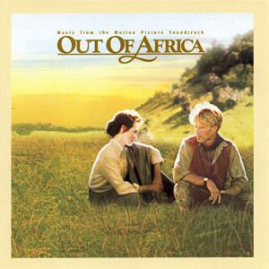
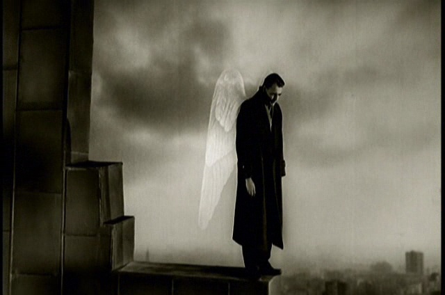

I am a lawyer of 29 years old but will become a full dev.
|  |
Out of AfricaAprès une déception amoureuse, la jeune Danoise Karen décide de se marier et de s'embarquer pour l'Afrique. Vite délaissée par un mari volage, elle se consacre à la culture des caféiers et fait figure de pionnière. Son amitié pour l'aventurier Denys se transformera en amour mais elle ne saura pas retenir cet homme épris de liberté. |
BabelEn plein désert marocain, un coup de feu retentit. Il va déclencher toute une série d'événements qui impliqueront un couple de touristes américains au bord du naufrage, deux jeunes Marocains auteurs d'un crime accidentel, une nourrice qui voyage illégalement avec deux enfants américains, et une adolescente japonaise rebelle dont le père est recherché par la police à Tokyo. Séparés par leurs cultures et leurs modes de vie, chacun de ces quatre groupes de personnes va cependant connaître une même destinée d'isolement et de douleur... |
|
|  |
Wings of DesireDes anges s'intéressent au monde des mortels, ils entendent tout et voient tout, même les secrets les plus intimes. Chose inouïe, l'un d'entre eux tombe amoureux. Aussitôt, il devient mortel. Un film sur le désir et sur Berlin, "lieu historique de vérité". |